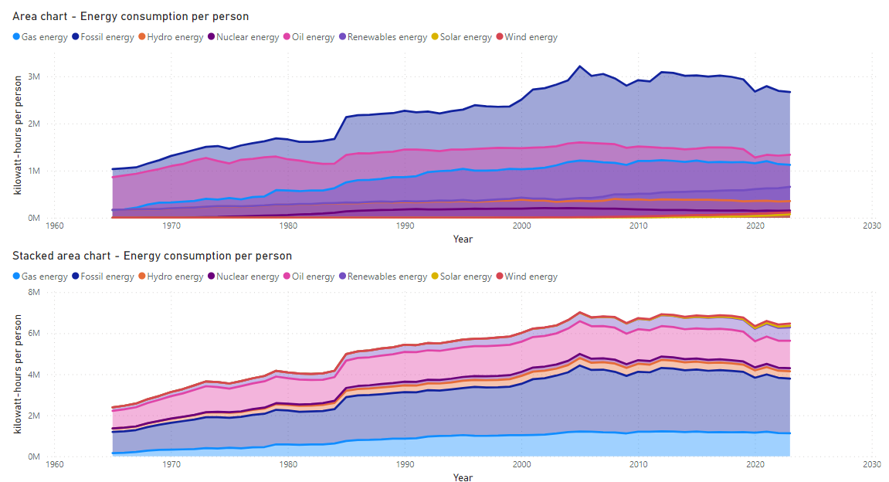

GRUPO I (Técnicas básicas y populares): 105. Área Chart
Descripción: Un gráfico de área muestra la evolución de una variable continua a lo largo del tiempo. Se pueden dividir en categorías y mostrar como stacked area chart. El color del área permite diferenciar entre categorías.
Ejemplo: Visualizar la evolución de diferentes fuentes de consumo de energía mundial a lo largo de los años.
Tipo de datos y estructura: Datos numéricos continuos históricos, divididos en categorías.
Limitaciones: Puede dificultar la lectura cuando hay múltiples áreas que se superponen.
Representación: Esta representación permite ver la evolución del consumo de energía mundial de diferentes fuentes. Podemos observar la mayor utilización de energía fósil y el aumento del consumo de gas a lo largo del tiempo.

GRUPO II (Habituales y conocidas en ámbitos específicos y de expertos): 204. Force-Directed Graph
Descripción: Muestra la relación entre entidades mediante un grafo. Los nodos representan entidades y las aristas, la relación entre ellas. El grosor de la línea indica la fuerza de la relación.
Ejemplo: Representación de relaciones de personajes en una película, donde las aristas indican el número de diálogos compartidos.
Tipo de datos y estructura: Datos cualitativos en nodos y datos numéricos en las relaciones.
Limitaciones: Un exceso de conexiones puede saturar la visualización.
Representación: El grafo muestra los personajes principales en "Juego de Tronos" y sus relaciones más fuertes, como entre Jaime & Brienne, Jon & Mance, Bran & Hodor, Sansa & Tyrion.
Filtrando relaciones menores a 15:

GRUPO III (Menos habituales o más específicos): 302. Rain Cloud Plots
Descripción: Combina un diagrama de violín, un gráfico de puntos y un box plot para mostrar la distribución de datos continuos en una sola visualización.
Ejemplo: Comparar distribuciones de datos, como los tiempos de reacción en distintos grupos de edad en un estudio.
Tipo de datos y estructura: Datos continuos segmentados en categorías.
Limitaciones: Requiere conocimientos previos para entender la combinación de diferentes elementos visuales.
Representación: La gráfica muestra la distribución del índice de masa corporal (BMI) en distintas categorías de salud, observando las características asociadas a diferentes estados de salud.